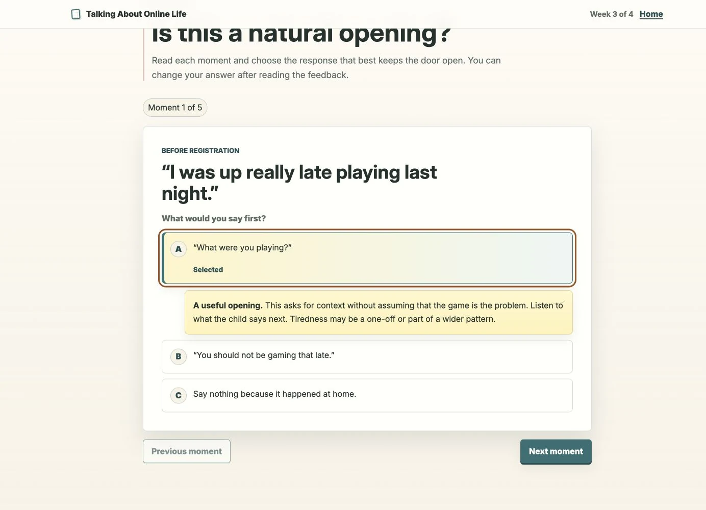
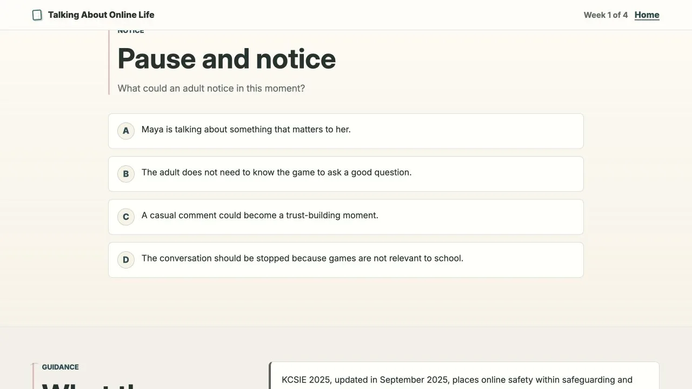
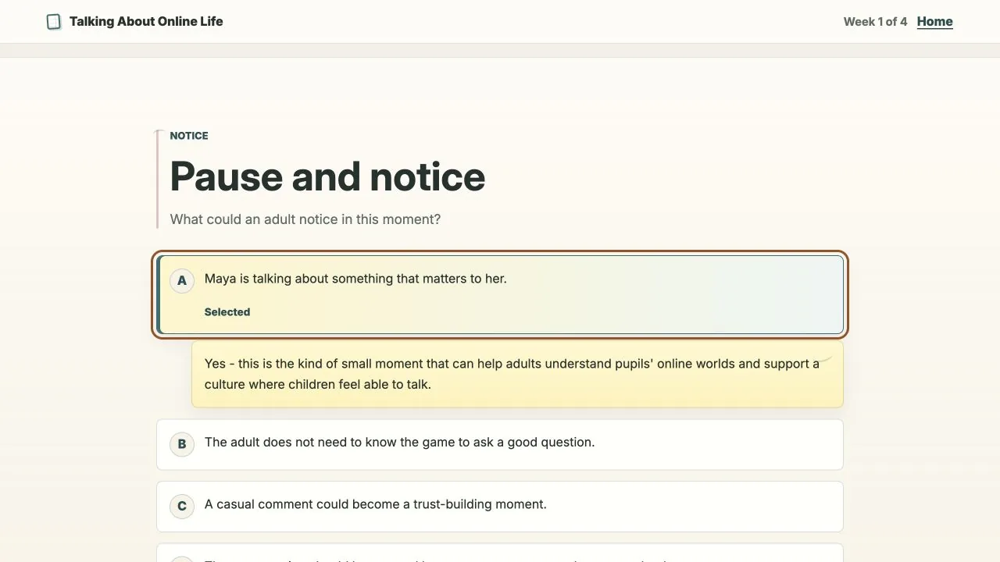
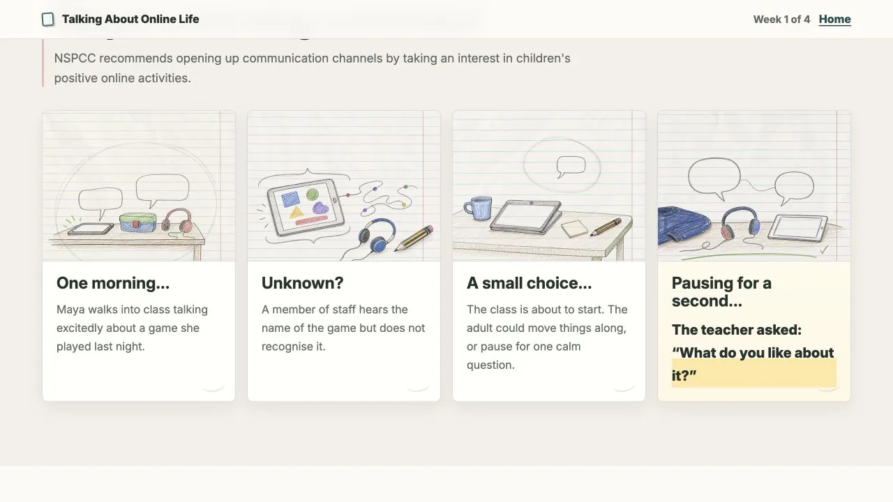
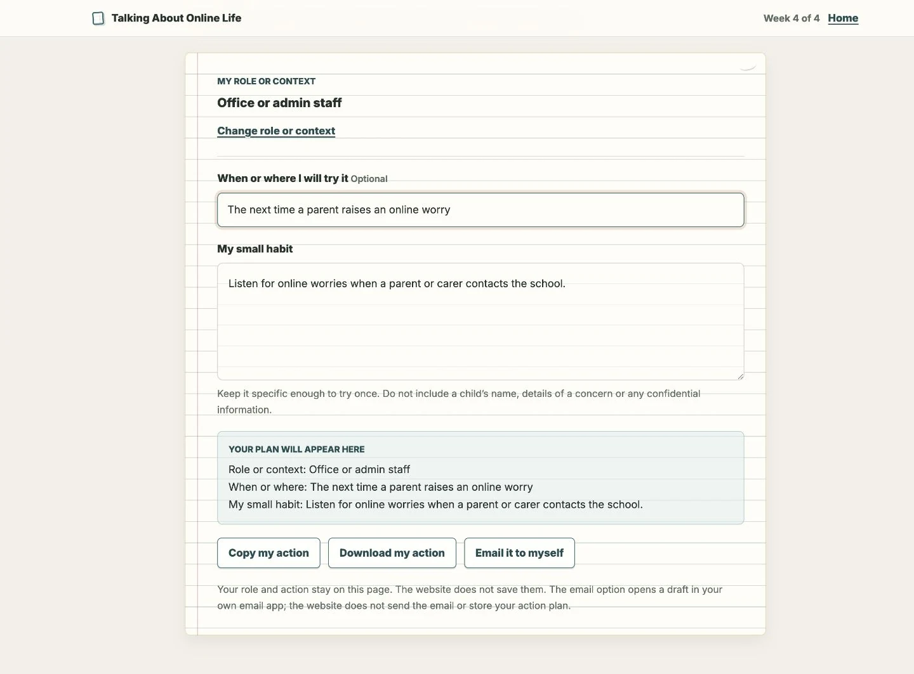

Online safety: a shared responsibility
As online-safety safeguarding lead, I designed a connected intervention for staff, parents and pupils. The aim was to make responsibilities clear and give people practical ways to act.
Staff learning, parent workshops and pupil lessons delivered. Early changes in practice remain observations rather than measured impact.
Explore the four-week staff module (opens in a new tab)
Discover
Staff lacked confidence and a clear sense of responsibility.
Online-safety concerns were routinely referred to me. Conversations suggested that some staff saw the subject as specialist territory and felt uncomfortable discussing it with pupils. I inferred that awareness of responsibilities needed practical support alongside it.
What informed the problem
The evidence came from my safeguarding role, recurring referrals and conversations with staff. This was organisational and contextual evidence, rather than a formal user-research study.
My interpretation was that staff needed a way to begin useful conversations without knowing every game or platform. Limited staff capacity also shaped the decision to use short, repeatable learning.
These observations informed the design direction. They did not establish how independently using staff would interpret the digital interface.
Define
I designed a joined-up safeguarding response.
Safeguarding guidance and ten years in education informed my decision to involve staff, parents and pupils. The delivery approach connected staff development with parent workshops and internet-safety lessons in computing.
- Staff
- Online learning and professional development on responsibilities and practical responses.
- Parents
- Workshops as part of the wider safeguarding intervention.
- Pupils
- Internet-safety lessons within computing.
Why the approach includes the wider school community
The wider approach was a professional design decision from the outset. The module was one part of that response, rather than a separate product whose results determined whether parents and pupils should be involved.
NSPCC Learning’s guidance on online safety and schools recommends a whole-school approach involving staff and parents, alongside teaching children about online safety. It supports the rationale for connecting these audiences; it does not evaluate this intervention.
Develop
I made the first action small and practical.
The staff module uses familiar situations, calm questions and supportive feedback. Maya mentions an unfamiliar game: asking “What do you like about it?” gives the adult a starting point. Concerns still follow the school’s safeguarding route.
- NoticeA reference to online life.
- Ask calmlyA simple, open question.
- Keep listeningSpace for the pupil to respond.
- Follow the safeguarding routeWhen a concern appears.
Notice the opportunity
The activity asks what an adult could notice in Maya’s comment. It focuses attention on the pupil’s experience, rather than testing knowledge of the game.


Explain why the response matters
Selecting that Maya is talking about something important to her reveals an explanation. The feedback connects the small moment to the intended safeguarding approach; it is not evidence that the approach has changed behaviour.


How the four weeks support practice
Each week follows Story → Notice → Guidance → Try → Reflect. The sequence introduces a recognisable moment, asks staff to interpret it, connects it to guidance and ends with a small action and reflection.
Weeks 1 and 2 introduce everyday online life and repeated conversation. Week 3 offers five ordinary moments to practise a response. Week 4 asks staff to choose a role-specific habit and create a private action plan.




The module started a wider programme.
The four-week staff module was used from September 2026. Staff professional development, parent workshops and pupil lessons followed as connected parts of the intervention. Further activity is planned; sustained change needs continued work and evaluation.
Delivery, stakeholder review and product details
Delivered scope
The overview and all four weekly experiences are live. The broader intervention also includes the staff development, parent workshops and pupil lessons described above. Those activities should not be confused with completion of a separate twelve-week digital course.
An earlier concept proposed Awareness, Confidence and Action over twelve weeks. Only the four-week Awareness module is presented as a delivered digital sequence. Supporting email and QR touchpoints were prototyped; a proposed video was not produced.
Organisational review
I guided senior leadership through the functioning module. They approved the need, calm tone, short format, interface and rollout direction. This was a stakeholder walkthrough, rather than usability testing.
Implementation and accessibility
I designed and iterated in the browser, using AI-assisted development while retaining responsibility for the strategy, interactions and safeguarding framing. Semantic headings, a skip link, visible focus, labelled controls and live feedback are implemented measures, rather than a claim of formal accessibility conformance.
Outcome
I’ve observed early changes in reporting and teaching.
Since rollout, I’ve observed increased reporting of internet-safety incidents and more internet-safety teaching across all year groups. These observations come from my role as online-safety safeguarding lead.
Evidence limits and the next evaluation
The reporting and teaching changes are professional observations, not a quantified before-and-after evaluation. Follow-up needs to examine how staff apply the approach, whether practice persists and what incident records can reliably show.
Independent use of the module also needs usability evaluation. Analytics can help identify where people stop or interact, but interviews or observed sessions are needed to understand why.
Earlier instrumentation check
16 page views, 9 active users and 192 events showed that GA4 events were firing. Traffic provenance was not established. These figures are retained as an instrumentation check, not evidence of training completion, learning or safeguarding impact.
Dated references in the module
- Department for Education: Keeping children safe in education (the module cites the 2025 edition).
- Ofcom: Children’s Media Literacy Report 2024.
The module’s dated references need a currency review as part of ongoing content maintenance.